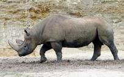
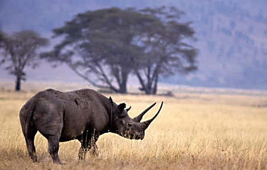

The Western Black Rhinoceros or West African black rhinoceros is a subspecies of the black rhinoceros, declared extinct by the IUCN in 2011.
Kingdom: Animalia Phylum: Chordata Class: Mammalia Order: Perissodactyla Family: Rhinocerotidae Genus: Diceros Species: D. bicornis
The western black rhinoceros measured 3-3.75 m (9.8-12.3 ft) long, had a height of 1.4-1.8 m (4.6-5.9 ft), and weighed 800-1,400 kg (1,800-3,100 lb). It had two horns, the first measuring 0.5-1.4 m (1.6-4.6 ft) and the second 2-55 cm (0.79-21.65 in). Like all Black Rhinos, they were browsers, and their common diet included leafy plants and shoots around their habitat. During the morning or evening, they would browse for food. During the hottest parts of the day, they slept or wallowed. They inhabited much of sub-Saharan Africa. Many people believe their horns held medicinal value, which led to heavy poaching. However, this belief has no grounding in scientific fact. Like most black rhinos, they are believed to have been nearsighted and would often rely on local birds, such as the red-billed oxpecker, to help them detect incoming threats.
The western black rhinoceros was heavily hunted in the beginning of the 20th century, but the population rose in the 1930s after preservation actions were taken. As protection efforts declined over the years, so did the number of western black rhinos. By 1980 the population was in the hundreds. No animals are known to be held in captivity, however it was believed in 1988 that approximately 20-30 were being kept for breeding purposes. Poaching continued and by 2000 only an estimated 10 survived. In 2001, this number dwindled to only five. While it was believed that around thirty still existed in 2004, this was later found to be based upon falsified data.
 